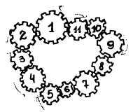

📅 19 марта 2026
📖 Определение и свойства
Определение: Целое число называется чётным, если оно делится на 2 без остатка, и нечётным в противном случае.
📌 Примеры:
• 32 — чётное, так как 32 : 2 = 16
• 21 — нечётное, так как 21 не делится на 2
⚠️ Важно: Чётность – это свойство целых чисел. Мы можем сказать, чётным или нечётным является число 7 или 22, но нельзя говорить о чётности чисел ½ или 5,025.
Следствие: Из определения следует, что любое целое чётное число можно представить в виде 2n, где n – целое число, и любое целое нечётное число можно представить в виде 2n+1, где n – целое число.
Обозначения: Н — нечётное число, Ч — чётное число.
📋 Свойства чётных и нечетных чисел
Признак чётного числа:
Число является чётным тогда и только тогда, когда его последняя цифра чётная.
Подумайте, чётным или нечётным является число 0?
Посмотрите на последовательность чисел «1, 2, 3, 4, 5, 6, 7, 8, 9, 10» и определите, какую закономерность чётных и нечётных чисел можно здесь заметить?
Вставь пропущенные слова:
1. Чтобы определить чётность числа, можно посмотреть на __________ цифру в его записи. Если она чётная (0, 2, 4, 6, 8), то число __________, а если нечётная (1, 3, 5, 7, 9), то число __________.
2. Сумма и разность двух чисел чётная, если __________ числа чётные или __________ нечётные (то есть это числа __________ чётности).
3. Сумма и разность двух чисел нечётная, если одно из них чётное, а другое __________ (то есть это числа __________ чётности).
1. Чтобы определить чётность числа, можно посмотреть на последнюю цифру в его записи. Если она чётная (0, 2, 4, 6, 8), то число чётное, а если нечётная (1, 3, 5, 7, 9), то число нечётное.
2. Сумма и разность двух чисел чётная, если оба числа чётные или оба нечётные (то есть это числа одинаковой чётности).
Пример: 2+4=6 (чёт), 3+5=8 (чёт), 5−3=2 (чёт)
3. Сумма и разность двух чисел нечётная, если одно из них чётное, а другое нечётное (то есть это числа разной чётности).
Пример: 2+3=5 (нечёт), 6−1=5 (нечёт)
💡 Полезные рекомендации
Задачи на чётность можно разделить на 3 подтемы:
Свойства чередования:
1. Если в некоторой замкнутой цепочке чередуются объекты двух видов, то их чётное число (и каждого вида поровну).
2. Если в некоторой замкнутой цепочке чередуются объекты двух видов:
• начало и конец цепочки разных видов → в ней чётное число объектов
• начало и конец одного вида → нечётное число объектов
3. Обратно: по чётности длины чередующейся цепочки можно узнать, одного или разных видов её начало и конец.
На плоскости расположено 11 шестерёнок, соединённых по цепочке (см. рис.).
Могут ли все шестерёнки вращаться одновременно?

Предположим, что первая шестерёнка вращается по часовой стрелке. Тогда вторая — против, третья — снова по, четвёртая — против и т.д.
Ясно, что «нечётные» шестерёнки должны вращаться по часовой стрелке, а «чётные» — против.
Но тогда 1-я и 11-я шестерёнки одновременно вращаются по часовой стрелке.
Противоречие. Значит, все шестерёнки вращаться одновременно не могут.
Ответ: нет, не могут.
Конь вышел с поля а8 и через несколько ходов вернулся на него.
Докажите, что он сделал чётное число ходов.
При каждом ходе конь меняет цвет поля, то есть происходит чередование цвета полей.
Поэтому на исходное поле (того же цвета) он может вернуться только через чётное число ходов.
Что и требовалось доказать.
Можно ли доску размером 5 × 5 заполнить доминошками размером 1 × 2?
Площадь всей доски равна 5 · 5 = 25, а площадь каждой доминошки равна 1 · 2 = 2.
Поскольку 25 — нечётное число, целым числом доминошек доску заполнить не удастся.
Ответ: нельзя.
Придумай способ, как, не пересчитывая, можно узнать, кого в классе больше: девочек или мальчиков.
Разобьём всех девочек и мальчиков на пары (например, посадим по парам за парты или попросим мальчика взять девочку за руку).
• Если все разбились на пары → девочек и мальчиков поровну.
• Если остались мальчики без пары → их больше.
• Если остались девочки без пары → их больше.
Можно ли разменять 25 рублей при помощи:
а) десяти купюр достоинством в 1, 3 и 5 рублей?
б) семи купюр достоинством в 1, 3 и 5 рублей?
а) Сумма чётного количества нечётных слагаемых не может быть нечётным числом. Поэтому нельзя.
б) Сумма нечётного количества нечётных слагаемых нечётна, тогда можно привести пример:
5 + 5 + 5 + 5 + 1 + 3 + 1 = 25
Ответ: а) нельзя, б) можно.
В ряд выписаны числа от 1 до 10.
Можно ли между ними расставить знаки "+" и "−" так, чтобы получился 0?
Нельзя, так как среди чисел от 1 до 10 нечётное количество нечётных (их 5).
Ответ: нельзя.
В тетради-черновике Насти было 48 листов, пронумерованных от 1 до 96. Настя вырвала из тетради 17 листов (не обязательно идущих подряд) и сложила все 34 числа, которые были написаны на них. У неё получилось 700.
Докажи, что Настя обсчиталась.
На листе с одной стороны находится чётное число, а с другой — нечётное. Поэтому сумма номеров на одном листе нечётна.
При сложении 17 нечётных чисел получится нечётное число, а у Насти получилось чётное (700).
Вывод: Настя обсчиталась.
Однажды летом Костя взял толстую тетрадку и решил посчитать в ней сумму всех натуральных чисел от 1 до 2000. Костя очень старался и сосчитал сумму правильно.
Каким числом оказалась сумма: чётным или нечётным?
Среди чисел от 1 до 2000 поровну чётных и нечётных чисел, так как эти числа разбиваются на пары НЧ, НЧ, …, НЧ.
Значит, там 2000 : 2 = 1000 нечётных чисел.
Так как в сумме чётное количество нечётных чисел, значит, сумма будет чётной.
Разобьём все числа на пары с суммой 2001: первое с последним, второе с предпоследним и так далее.
Всего чисел 2000, и получится 2000 : 2 = 1000 пар чисел.
Тогда сумма всех чисел равна 2001 · 1000 = 2001000, а это чётное число.
Ответ: сумма чётная.
А сколько девочек?
Чтобы выполнялось условие о соседях одного пола, около каждого мальчика должно стоять две девочки, а около каждой девочки — два мальчика.
Это условие будет выполняться, если дети будут чередоваться в кругу: мальчик, девочка, мальчик, девочка и так далее.
Так как мальчиков пять, то и девочек (включая саму Катю) должно быть пять.
Ответ: 5 девочек.
Могло ли у него в итоге получиться 100 частей?
Если любой кусок стенгазеты разорвать на 3 части, то общее число кусков увеличится на 2.
Значит, общее количество частей всегда будет нечётным. Но 100 — чётное число.
Ответ: нет, не могло.
Как это удалось определить?
Общее количество депутатов в обеих палатах чётно, так как весь парламент состоит из двух одинаковых по численности палат.
Обозначим количество депутатов, голосовавших против, за x. Тогда тех, кто голосовал за, было x + 25.
Общее число депутатов тогда должно быть равно 2x + 25 — нечётному числу.
Но мы знаем, что оно чётно. Значит, голоса были посчитаны неправильно.
Не вычисляя эту сумму, определи, какое она получила число: чётное или нечётное.
1) 100 – 19 = 81 (стр.) — всего
2) Разобьём числа на пары: ЧН ЧН ЧН … Число 100 останется без пары.
3) 80 : 2 = 40 (номеров) — нечётных
4) В сумме 40 нечётных чисел, поэтому она чётная.
Ответ: чётное.
На чудо-дереве росли 30 апельсинов и 25 бананов. Каждый день садовник снимал ровно два фрукта. Причём, если он снимал одинаковые фрукты, то на дереве появлялся новый банан, а если разные — новый апельсин.
В конце концов, на дереве остался один фрукт.
Какой: банан или апельсин?
После того, как садовник снимает два фрукта, возможны три ситуации:
• Сняли два апельсина → число апельсинов уменьшилось на 2, а число бананов увеличилось на 1.
• Сняли два банана → число апельсинов не изменилось, а число бананов уменьшилось на 1.
• Сняли один апельсин и один банан → число апельсинов не изменилось, а число бананов уменьшилось на 1.
Получается, что число апельсинов всегда либо не изменяется, либо уменьшается на 2.
Изначально апельсинов было 30 — чётное число. Так как чётность их количества никогда не меняется, то остаться 1 апельсин не может, так как 1 — нечётное число.
Ответ: остался банан.